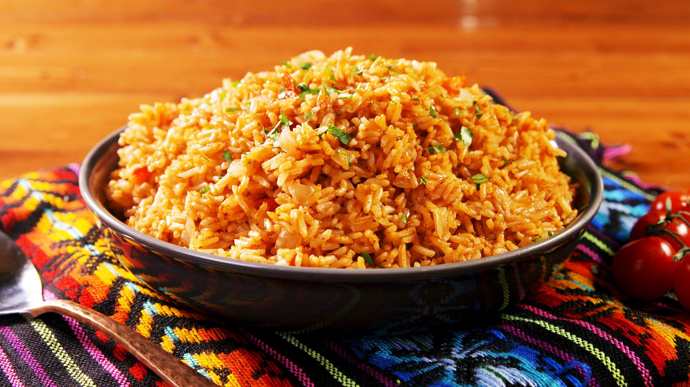

Spanish Rice

Description
This is my second time making this dish so I'm not sure if it is correct or not but I'm recalling the recipe based on how I recently made it. The recipe can definitely be improved but I haven't done enough research and had enough Spanish Rice to know what is good and what is better. However, I still think this recipe will suffice for most palettes.
Ingredients
- Rice
- Garlic
- Onion
- Tomato
- Chicken Bouillon
Directions
- Prepare Ingredients
- Wash rice thoroughly and drain.
- Peel garlic and onion.
- Cut onion and tomato into smaller chucks.
- Use a blender to blend onion tomato, onion, and garlic.
- Add water to dilute and continue to blend thoroughly.
- Toast rice in pan with oil.
- After rice has toasted and is starting to brown, add the blended mixture with the rice.
- Mix the rice and onion-tomato mixture thoroughly.
- If it looks like there's not enough water, add water to the rice.
- Once the rice has started to boil, turn down the heat and cover with a lid or aluminum foil.
- Turn down the heat and let the rice slowly cook.
- When the rice is almost done cooking, turn off the heat and let the rice finish cooking.
- Scrape the bottom of the pan to prevent the rice from burning too much and to make cleaning the pan easier.